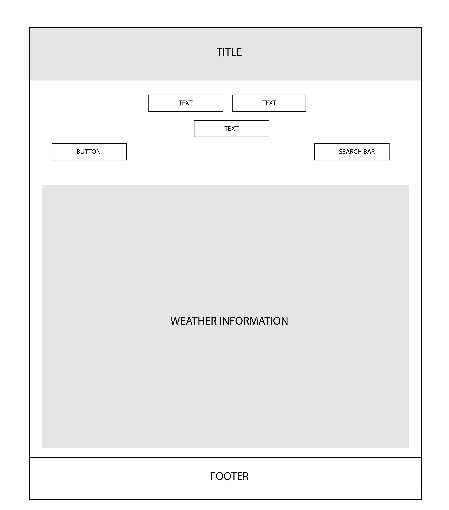

Yadira Stubbs
Weather Forecast
VANCOUVER, BRITISH COLUMBIA. 2018. ROLE: SOLE DESIGNER.
The Weather Forecast app allows you to see the weather forecast of different cities in the world as well as other information about them. Users are also able to see high and low temperatures of these cities and what the icons refer to. The purpose of this project was to design this app using AngularJS code language combined with other languages for styling and content.
TOOLKIT


Branding
I kept the branding conventional for this app as I wanted it to be extremely subtle, yet still be able to grab the users' attention. I used a serif font for the logo and fresh, cool tones for the imagery and branding.
Color Palette
I wanted the colors that were used to be synonymous with weather elements such as rain, snow and thunder and chose to use a cool palette to illustrate this to my users. The colors are very subtle but compliment one another without being too abrasive.
#7FFFD4
#fff
#220080
#000000
Planning and Development
I was able to bring my app to life by using wireframes that I felt was necessary for portraying how I wanted the website to look. The website showcases what the app is about and a 10-day forecast for each city. All of the weather information is generated into the app using Yahoo Weather forecast information.
